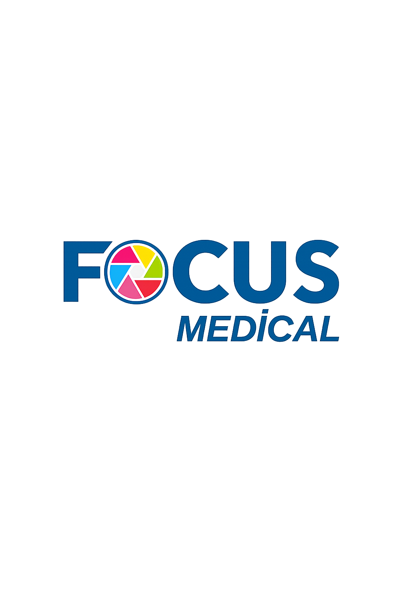

<!DOCTYPE html>
<html lang="tr">
<head>
    <meta charset="UTF-8">
    <meta name="viewport" content="width=device-width, initial-scale=1.0">
    
    <title>Focus Medikal - 2026 Dijital Katalog</title>
    <link href="https://fonts.googleapis.com/css2?family=Montserrat:wght@300;400;500;600;700;800;900&family=Oswald:wght@500;700&display=swap" rel="stylesheet">
    <style>
        /* --- 1. SIFIRLAMA --- */
        * { box-sizing: border-box; -webkit-print-color-adjust: exact !important; print-color-adjust: exact !important; }
        
        html, body {
            margin: 0; padding: 0;
            width: 100%; min-height: 100vh;
            background: #222; 
            font-family: 'Montserrat', sans-serif;
            display: flex;
            flex-direction: column;
            align-items: center;
            padding-top: 20px;
            padding-bottom: 20px;
        }

        /* --- 2. RENK PALETİ --- */
        :root {
            --focus-cyan: #00838f; 
            --focus-dark: #004d40; 
            --focus-gold: #bcaaa4; 
            --true-gold: #cfa355; 
        }
        .theme-blue { --theme-color: #006978; --theme-grad: linear-gradient(90deg, #004d40 0%, #00838f 100%); }
        .theme-orange { --theme-color: #bf360c; --theme-grad: linear-gradient(90deg, #bf360c 0%, #d84315 100%); }

        /* --- 3. AKILLI SAYFA YAPISI (RESPONSIVE A4) --- */
        .page-container {
            width: 100%;
            max-width: 210mm; /* Masaüstünde A4 genişliğini geçme */
            margin: 0 auto 30px auto;
            position: relative;
        }

        .page {
            /* En boy oranını A4 (210/297) olarak kilitle */
            aspect-ratio: 210 / 297;
            width: 100%;
            background: white;
            position: relative;
            overflow: hidden;
            box-shadow: 0 5px 20px rgba(0,0,0,0.5);
            display: block;
        }

        /* --- 4. FONT ÖLÇEKLENDİRME (MOBİLDE YAZILAR KÜÇÜLMESİN DİYE) --- */
        /* Masaüstü (A4 boyutunda) fontlar */
        .page { font-size: 14px; } 
        
        /* Mobil: Ekran daraldıkça fontları orantılı küçült (container query benzeri mantık) */
        @media screen and (max-width: 800px) {
            .page { font-size: 1.8vw; } /* Ekran genişliğine göre font ayarla */
            .logo-area { bottom: 20% !important; left: 5% !important; }
            .main-logo { height: 25vw !important; } /* Logo ekranın %25'i kadar olsun */
            .sponsor-grid img { height: 8vw !important; padding: 1vw 2vw !important; }
            .sponsor-strip { padding: 4vw 5vw !important; }
            .title-area { padding: 0 6% 3% 6% !important; }
            .brand-title { font-size: 10vw !important; }
            .year-text { font-size: 2.5vw !important; letter-spacing: 1vw !important; }
            .slogan { font-size: 2vw !important; margin-top: 2vw !important; }
            
            /* İçerik Yazıları */
            .top-section { padding: 8vw 6vw 2vw 6vw !important; }
            .mini-head { font-size: 2vw !important; margin-bottom: 1vw !important;}
            .main-head { font-size: 6vw !important; }
            .sub-head { font-size: 2.5vw !important; margin-top: 1vw !important;}
            .intro-text { font-size: 1.8vw !important; margin-top: 3vw !important; }
            .blue-bar { height: 6vw !important; margin-top: 4vw !important; padding-left: 6vw !important;}
            .bar-text { font-size: 2.2vw !important; }
            
            .product-section { padding: 5vw 6vw !important; }
            .prod-title { font-size: 7vw !important; }
            .prod-sub { font-size: 2.2vw !important; }
            .prod-desc { font-size: 1.8vw !important; margin: 3vw 0 !important;}
            .tf-item { font-size: 1.8vw !important; margin-bottom: 2vw !important;}
            .top-features { margin-top: 4vw !important; gap: 2vw !important;}
            .star { font-size: 2.2vw !important; margin-right: 1vw !important;}

            .inner-page-logo { height: 8vw !important; top: 5vw !important; right: 6vw !important; }
            .machine-main { bottom: 6vw !important; right: -3vw !important; height: 55vw !important; }
            
            .page-footer { height: 7vw !important; padding: 0 6vw !important; }
            .footer-logo { font-size: 2.2vw !important; }
            .footer-info { font-size: 1.8vw !important; }
            .page-num { width: 4vw !important; height: 4vw !important; font-size: 2vw !important; }

            .grid-layout { padding: 5vw 6vw !important; gap: 3vw !important; }
            .grid-card { padding: 2vw !important; }
            .grid-card img { height: 15vw !important; margin-bottom: 1vw !important; }
            .grid-card h3 { font-size: 2.5vw !important; margin: 1vw 0 !important; }
            .grid-card p { font-size: 1.8vw !important; }
        }

        /* --- 5. ORTAK GRAFİKLER --- */
        .paper-bg { position: absolute; top: 0; left: 0; width: 100%; height: 100%; object-fit: cover; z-index: 0; display: block; }
        .cover-content { position: relative; z-index: 10; height: 100%; display: flex; flex-direction: column; justify-content: flex-end; }
        
        .logo-area { position: absolute; bottom: 160px; left: 50px; z-index: 20; }
        .main-logo { height: 200px; filter: drop-shadow(0 0 30px rgba(255,255,255,0.2)); }
        
        .title-area { padding: 0 60px 20px 60px; text-align: right; margin-bottom: 20px; }
        .year-text { font-size: 1.2em; letter-spacing: 12px; color: var(--focus-cyan); display: block; margin-bottom: 5px; font-weight: 600; }
        .brand-title { font-family: 'Oswald', sans-serif; font-size: 6em; line-height: 0.9; margin: 0; letter-spacing: 2px; text-transform: uppercase; color: #fff; }
        .brand-title span { color: var(--true-gold); }
        .slogan { font-size: 1em; margin-top: 20px; letter-spacing: 6px; text-transform: uppercase; color: #ccc; border-top: 2px solid var(--true-gold); display: inline-block; padding-top: 10px; }

        .sponsor-strip { background: rgba(255,255,255,0.05); padding: 30px 40px; border-top: 2px solid var(--true-gold); backdrop-filter: blur(5px); position: relative; z-index: 10; }
        .sponsor-grid { display: flex; justify-content: center; align-items: center; gap: 2%; flex-wrap: nowrap; }
        .sponsor-grid img { background: #ffffff; height: 50px; width: auto; max-width: 18%; padding: 5px; border-radius: 6px; box-shadow: 0 5px 15px rgba(0,0,0,0.6); object-fit: contain; }

        .inner-page-logo { position: absolute; top: 40px; right: 50px; height: 60px; z-index: 25; object-fit: contain; filter: drop-shadow(0 2px 5px rgba(0,0,0,0.1)); }
        .custom-overlay-layer { position: absolute; top: 0; left: 0; width: 100%; height: 100%; z-index: 1; background: linear-gradient(90deg, #ffffff 40%, rgba(255,255,255,0.9) 55%, rgba(255,255,255,0) 100%); }
        .bg-doctor { position: absolute; top: 0; right: 0; width: 60%; height: 50%; background-image: url('https://img.freepik.com/free-photo/medicine-uniform-healthcare-medical-workers-day-concept_185193-108329.jpg'); background-size: cover; background-position: top center; opacity: 0.1; z-index: 0; mask-image: linear-gradient(to left, rgba(0,0,0,1), rgba(0,0,0,0)); -webkit-mask-image: linear-gradient(to left, rgba(0,0,0,1), rgba(0,0,0,0)); }

        .top-section { position: relative; z-index: 10; padding: 60px 50px 20px 50px; }
        .mini-head { font-size: 0.9em; font-weight: 700; color: var(--theme-color); text-transform: uppercase; margin-bottom: 5px; }
        .main-head { font-size: 3em; color: #1a1a1a; margin: 0; line-height: 1; text-transform: uppercase; }
        .main-head span { font-weight: 300; } .main-head strong { font-weight: 900; } 
        .sub-head { font-size: 1.3em; color: #333; margin-top: 10px; font-weight: 400; letter-spacing: 0.5px; }
        .intro-text { font-size: 0.8em; color: #444; line-height: 1.6; margin-top: 20px; max-width: 90%; text-align: justify; font-weight: 500;}
        .top-features { display: grid; grid-template-columns: 1fr 1fr; gap: 15px; margin-top: 25px; }
        .tf-item { font-size: 0.8em; font-weight: 700; color: #222; display: flex; align-items: center; }
        .star { color: var(--true-gold); font-size: 1.2em; margin-right: 8px; }

        .blue-bar { position: relative; z-index: 10; width: 100%; height: 45px; margin-top: 30px; background: var(--theme-grad); display: flex; align-items: center; padding-left: 50px; box-shadow: 0 5px 15px rgba(0,0,0,0.15); }
        .bar-text { color: white; font-size: 1em; font-weight: 700; text-transform: uppercase; letter-spacing: 1px; }

        .grid-floor { position: absolute; bottom: 60px; left: 0; width: 100%; height: 400px; background-image: linear-gradient(rgba(0,0,0,0.05) 1px, transparent 1px), linear-gradient(90deg, rgba(0,0,0,0.05) 1px, transparent 1px); background-size: 40px 40px; transform: perspective(600px) rotateX(60deg) translateY(50px); z-index: 5; pointer-events: none; mask-image: linear-gradient(to top, rgba(0,0,0,1), rgba(0,0,0,0)); -webkit-mask-image: linear-gradient(to top, rgba(0,0,0,1), rgba(0,0,0,0)); }

        .product-section { position: relative; z-index: 10; padding: 40px 50px; display: flex; }
        .prod-left { width: 55%; padding-right: 20px; }
        .prod-title { font-size: 3.5em; color: #1a1a1a; margin: 0; line-height: 0.9; text-transform: uppercase; }
        .prod-title strong { font-weight: 800; } .prod-title span { font-weight: 300; }
        .prod-sub { font-size: 1.1em; font-weight: 700; color: #444; margin-top: 5px; }
        .prod-desc { font-size: 0.8em; color: #555; line-height: 1.5; margin-top: 20px; margin-bottom: 25px; text-align: justify; }
        .prod-list .tf-item { margin-bottom: 12px; font-size: 0.8em; }

        .machine-main { position: absolute; bottom: 40px; right: -20px; height: 600px; z-index: 20; filter: drop-shadow(-20px 20px 40px rgba(0,0,0,0.3)); }

        .page-footer { position: absolute; bottom: 0; left: 0; width: 100%; height: 50px; background: var(--theme-color); display: flex; justify-content: space-between; align-items: center; padding: 0 50px; z-index: 15; color: white; box-shadow: 0 -5px 20px rgba(0,0,0,0.1); }
        .page-footer::before { content: ''; position: absolute; top: 0; left: 0; width: 100%; height: 100%; background: repeating-linear-gradient(45deg, rgba(255,255,255,0.05), rgba(255,255,255,0.05) 10px, transparent 10px, transparent 20px); }
        .footer-logo { font-size: 1em; font-weight: 800; letter-spacing: 1px; position: relative; z-index: 2; }
        .footer-info { font-size: 0.8em; font-weight: 500; position: relative; z-index: 2; opacity: 0.9;}
        .page-num { width: 30px; height: 30px; font-size: 1em; font-weight: 700; color: var(--theme-color); background: white; display: flex; align-items: center; justify-content: center; border-radius: 4px; position: relative; z-index: 2; }

        .grid-layout { display: grid; grid-template-columns: repeat(3, 1fr); gap: 20px; padding: 40px 50px; z-index: 20; position: relative;}
        .grid-card { background: white; padding: 15px; border: 1px solid #eee; text-align: center; border-radius: 8px; box-shadow: 0 5px 10px rgba(0,0,0,0.05); }
        .grid-card img { height: 100px; object-fit: contain; margin-bottom: 10px; width: 100%; }
        .contact-page { background: #111; color: white; display: flex; align-items: center; justify-content: center; }

        /* --- 6. PDF VE BASKI AYARLARI --- */
        @media print {
            html, body { margin: 0; padding: 0; background: none; }
            .page-container { margin: 0; max-width: none; }
            .page { 
                margin: 0 !important; 
                border: none !important; 
                box-shadow: none !important;
                page-break-after: always;
                background-color: transparent !important; 
                width: 210mm !important;
                height: 297mm !important;
                overflow: hidden !important;
                aspect-ratio: auto; /* Baskıda ratio zorunlu değil, mm yeterli */
            }
            .paper-bg { display: block !important; opacity: 1 !important; z-index: -1 !important; visibility: visible !important; }
            .cover-bg, .blue-bar, .sponsor-strip, .page-footer { -webkit-print-color-adjust: exact !important; print-color-adjust: exact !important; }
        }
    </style>
</head>
<body>

    <div id="catalog-container"></div>

    <script>
        const pages = [
            // 1. KAPAK
            {
                type: 'cover',
                bg: 'resimler/1.jpg',
                sponsors: ['resimler/2.png','resimler/3.png','resimler/4.png','resimler/5.png','resimler/6.png','resimler/7.png']
            },
            
            // 2. HAKKIMIZDA
            {
                type: 'machine', theme: 'theme-blue', cat: 'KURUMSAL',
                bgImage: 'resimler/8.jpg', 
                headTitle: 'VİZYON', headSub: '& MİSYON',
                subHead: 'Sektörün Güvenilir Çözüm Ortağı',
                topDesc: 'Focus Medikal; estetik ve güzellik sektöründe, yüksek teknolojili cihazların ithalatı, satışı, teknik servisi ve eğitimi konularında hizmet veren lider bir kuruluştur. 81 ilde aktif hizmet ağı ile yanınızdayız.',
                topTags: ['Hızlı Teknik Servis', 'Yedek Parça Garantisi', 'Kurulum & Eğitim', 'Uzman Kadro'],
                title: 'HAKKI', subTitle: 'MIZDA', detail: 'Türkiye Geneli Hizmet Ağı',
                desc: 'Müşteri memnuniyetini esas alan hizmet anlayışımızla, cihaz tedariğinden satış sonrası desteğe kadar tüm süreçlerde profesyonel çözümler sunuyoruz. Salonunuzun başarısı, bizim referansımızdır.',
                features: ['Sertifikalı Eğitimler', '7/24 Teknik Destek', 'Yerinde Servis', 'Yüksek Müşteri Memnuniyeti'],
                img: '' 
            },

            // 3. ALEX PRO
            {
                type: 'machine', theme: 'theme-blue', cat: 'LAZER EPİLASYON',
                headTitle: 'TEKNOLOJİ', headSub: 'VE GÜVEN',
                subHead: 'Acısız Epilasyonun Yeni Adı',
                topDesc: 'Geliştirilmiş Hybrid soğutma teknolojisi sayesinde cilt yüzeyini -10°C\'ye kadar soğutarak yanma riskini ortadan kaldırır. Dört mevsim güvenle kullanılabilir.',
                topTags: ['Jelsiz Uygulama', 'Hybrid Soğutma', 'Dokunmatik Ekran', '4 Mevsim'],
                title: 'ALEX', subTitle: 'PRO', detail: 'Hava Üflemeli Buz Başlık',
                desc: 'Focus Alex Pro, 2000W güç çıkışı ve özel Chiller soğutma sistemi ile rakiplerinden ayrılır. Jelsiz ve jiletsiz uygulama konforu sunarak işletme maliyetlerinizi düşürür ve seans hızını artırır.',
                features: ['2000W Güçlü Çıkış', 'Chiller Soğutma Sistemi', '45 Dakikada Tüm Vücut', 'Hijyenik Kullanım', '%95 Başarı Oranı'],
                img: 'resimler/9.jpg'
            },

            // 4. ALEX RO
            {
                type: 'machine', theme: 'theme-blue', cat: 'DİODE LAZER',
                headTitle: 'YÜKSEK', headSub: 'PERFORMANS',
                subHead: 'Ütüleme Teknolojisi ile Maksimum Hız',
                topDesc: '808nm dalga boyu, kıl köküne (melanin) doğrudan ulaşarak kalıcı sonuçlar sağlar. Seri atış modu ile seans sürelerini yarıya indirir.',
                topTags: ['808nm Diode', 'Ütüleme Modu', 'Bronz Ten Uyumu', 'Seri Atış'],
                title: 'ALEX', subTitle: 'RO', detail: 'Hibrit Diode Sistemi',
                desc: 'Derin kıl köklerinde maksimum etki sağlayan Alex Ro, özel soğutmalı başlığı sayesinde acısız bir epilasyon deneyimi sunar. İnce ve açık renkli tüylerde dahi etkilidir.',
                features: ['20 Milyon Atış Garantisi', 'Safir Uç Soğutma', 'SHR / HR / SR Modları', '10Hz Atış Hızı', 'Ergonomik Başlık'],
                img: '' 
            },

            // 5. SECOND LASER
            {
                type: 'machine', theme: 'theme-blue', cat: 'IPL LAZER',
                headTitle: 'HIZLI', headSub: 'SONUÇ',
                subHead: '2. Nesil Gelişmiş Atış Sistemi',
                topDesc: 'Saniyede 20 atış yapabilen özel kapasitör teknolojisi. Özellikle ince tüylerde ve yüz bölgesinde rakiplerine göre çok daha yüksek başarı oranına sahiptir.',
                topTags: ['20Hz Atış Hızı', 'İnce Tüy Uzmanı', 'Ekonomik Lamba', 'Türkçe Menü'],
                title: 'SECOND', subTitle: 'LASER', detail: 'Ultra Hızlı IPL Teknolojisi',
                desc: 'Kompakt tasarımı ve güçlü filtreleme sistemi ile hem epilasyon hem de cilt yenileme uygulamalarında kullanılabilir. İşletme maliyeti düşük, karlılığı yüksektir.',
                features: ['Çift Kapasitör (15000uf)', '3 Farklı Filtre (640/530/480nm)', 'Safir Başlık', 'Akne ve Leke Tedavisi', 'Kompakt Tasarım'],
                img: 'resimler/11.jpg'
            },

            // 6. LIPOCRUSH
            {
                type: 'machine', theme: 'theme-orange', cat: 'BÖLGESEL İNCELME',
                headTitle: 'SOĞUK', headSub: 'GÜÇ',
                subHead: 'Cerrahisiz Liposuction Etkisi',
                topDesc: 'Yağ hücrelerini dondurarak kristalize eden ve vücuttan doğal yollarla atılmasını sağlayan ileri teknoloji Cryo sistemidir. Tek seansta 2-4 cm incelme sağlar.',
                topTags: ['-10°C Soğutma', 'Vakumlu Başlık', '4 Başlık Sistemi', 'Kalıcı Sonuç'],
                title: 'LIPO', subTitle: 'CRUSH', detail: '360° Surround Soğutma',
                desc: 'Vücudun farklı bölgeleri için tasarlanmış 4 farklı başlık aynı anda çalışabilir. İnatçı bölgesel yağlanmalarda (göbek, basen, kol) cerrahi müdahaleye gerek kalmadan çözüm sunar.',
                features: ['Cryo Lipoliz Teknolojisi', 'Dokunmatik Ekranlar', 'Ayarlanabilir Vakum Gücü', 'Sıfır İyileşme Süresi', 'Ağrısız İşlem'],
                img: '' 
            },

            // 7. G5 MASAJ
            {
                type: 'machine', theme: 'theme-orange', cat: 'VÜCUT ŞEKİLLENDİRME',
                headTitle: 'RİTMİK', headSub: 'TİTREŞİM',
                subHead: 'Selülit Tedavisinde Altın Standart',
                topDesc: 'Yüksek frekanslı itme ve titreşim hareketi ile yağ dokusunu hareketlendirir, kan dolaşımını hızlandırır ve selülit görünümünü ciddi oranda azaltır.',
                topTags: ['Selülit Giderme', 'Ödem Atma', 'Kas Gevşetme', 'Sıkılaşma'],
                title: 'G5', subTitle: 'PRO', detail: 'Profesyonel Masaj Cihazı',
                desc: '5 farklı masaj başlığı ile vücudun her bölgesine uygun uygulama imkanı. Laktik asidi vücuttan atarak yorgunluğu alır ve kas spazmlarını çözer.',
                features: ['0-4500 Rpm Hız Ayarı', 'Ergonomik Başlıklar', 'Kan Dolaşımı Artışı', 'Doku Toparlama', 'Dayanıklı Motor'],
                img: 'resimler/13.jpg'
            },

            // 8. LENF DRENAJ
            {
                type: 'machine', theme: 'theme-orange', cat: 'DETOKS & SAĞLIK',
                headTitle: 'PRESSO', headSub: 'TERAPİ',
                subHead: 'Vücuttaki Toksinlerden Arının',
                topDesc: 'Hava yastıkları ile vücuda ritmik basınç uygulayarak lenf sistemini harekete geçirir. Ödemin, toksinlerin ve fazla suyun vücuttan atılmasını sağlar.',
                topTags: ['Ödem Tedavisi', 'Toksin Atımı', 'Rahatlama', 'Metabolizma'],
                title: 'LENF', subTitle: 'DRENAJ', detail: 'Tam Vücut Tulum Sistemi',
                desc: 'Zayıflama tedavilerini destekleyen en önemli tamamlayıcı uygulamadır. Yağ yakımı sonrası serbest kalan yağ asitlerinin vücuttan uzaklaştırılmasını hızlandırır.',
                features: ['Bağımsız Hava Kanalları', 'Dijital Kontrol Paneli', 'Ayarlanabilir Basınç', 'Sessiz Çalışma', 'Kolay Giyim'],
                img: '' 
            },

            // 9. HEYKELTRAŞ
            {
                type: 'machine', theme: 'theme-orange', cat: 'BÖLGESEL İNCELME',
                headTitle: 'VÜCUT', headSub: 'MİMARİSİ',
                subHead: 'Sarkan Bölgelere Son',
                topDesc: 'Odaklanmış ultrasonik ses dalgaları ile yağları parçalarken aynı zamanda cildi sıkılaştırır. Özellikle kol ve iç bacak sarkmalarında etkilidir.',
                topTags: ['Ultrasonik Dalga', 'Lifting Etkisi', 'Sıkılaşma', 'Anında Fark'],
                title: 'HEYKEL', subTitle: 'TRAŞ', detail: 'Ultrasonik İncelme Sistemi',
                desc: 'Sıcak ve soğuk etkisi yaratmadan, tamamen ses dalgalarının gücüyle çalışan bu sistem, konforlu ve acısız bir incelme deneyimi sunar.',
                features: ['Derin Doku Etkisi', 'Kolajen Üretimi', 'Sarkma Tedavisi', 'Bölgesel Şekillendirme', 'Güvenli Uygulama'],
                img: 'resimler/15.jpg'
            },

            // 10. PASİF JİMNASTİK
            {
                type: 'machine', theme: 'theme-orange', cat: 'ELEKTRO TERAPİ',
                headTitle: 'KAS', headSub: 'GÜCÜ',
                subHead: 'Yattığınız Yerden Spor Yapın',
                topDesc: 'EMS (Elektriksel Kas Uyarımı) teknolojisi ile kasları saniyede defalarca kasıp gevşeterek yoğun egzersiz etkisi yaratır. Enerji harcatarak zayıflatır.',
                topTags: ['EMS Teknolojisi', 'Kas Güçlendirme', 'Kalori Yakımı', 'Vücut Toparlama'],
                title: 'PASİF', subTitle: 'JİMNASTİK', detail: 'Profesyonel Body Shaper',
                desc: '24 adet ped çıkışı ile tüm vücuda aynı anda uygulama yapılabilir. Göğüs dikleştirme, popo kaldırma ve karın kası yapma programlarına sahiptir.',
                features: ['Farklı Çalışma Modları', 'Ayarlanabilir Akım', 'Göğüs ve Yüz Pedleri', 'Lenfatik Akım', 'Metabolik Hızlanma'],
                img: '' 
            },

            // 11. HYDRAFACIAL
            {
                type: 'machine', theme: 'theme-blue', cat: 'CİLT BAKIMI',
                headTitle: 'DERİN', headSub: 'TEMİZLİK',
                subHead: 'Amerikan Cilt Bakım Teknolojisi',
                topDesc: 'Vortex teknolojisi ile cilde zarar vermeden siyah noktaları vakumlar. Aynı seansta temizleme, peeling, nemlendirme ve yenileme sağlar.',
                topTags: ['Vortex Başlık', 'LED Terapi', 'Leke Tedavisi', 'Parlaklık'],
                title: 'HYDRA', subTitle: 'MASTER', detail: '9+1 Fonksiyonlu Sistem',
                desc: 'Klasik cilt bakımının ötesinde, medikal bir bakım sunar. Ultrasonik spatula, RF başlık, Soğuk başlık ve Sprey tabancası ile tam kapsamlı bir güzellik istasyonudur.',
                features: ['Vortex Su Dermoabrazyon', 'Radyofrekans Lifting', 'Ultrasonik Temizleme', 'Oksijen Jet Peeling', 'PDT LED Maske'],
                img: 'resimler/17.jpg'
            },

            // 12. ALTIN İĞNE
            {
                type: 'machine', theme: 'theme-blue', cat: 'MEDİKAL ESTETİK',
                headTitle: 'AMELİYATSIZ', headSub: 'GENÇLİK',
                subHead: 'Fraksiyonel Radyofrekans Mucizesi',
                topDesc: 'Altın kaplama mikro iğnelerle cilt altına inerek, kontrollü hasar ve ısı enerjisi verir. Cildin kendi onarım mekanizmasını (kolajen) tetikler.',
                topTags: ['Fraksiyonel RF', 'Akne İzi Tedavisi', 'Gözenek Sıkılaştırma', 'Cilt Germe'],
                title: 'ALTIN', subTitle: 'İĞNE', detail: 'Mikro İğneleme Sistemi',
                desc: 'Yüz gençleştirme, boyun toparlama, leke tedavisi ve çatlak giderme işlemlerinde en etkili medikal cihazdır. Vakumlu başlığı sayesinde acı hissi minimumdur.',
                features: ['0.5 - 3.5mm Derinlik', 'İzoleli ve İzolesiz İğne', 'Vakumlu Başlık', 'Kısa İyileşme Süresi', 'Ameliyatsız Lifting'],
                img: '' 
            },

            // 13. DERMAPEN
            {
                type: 'machine', theme: 'theme-blue', cat: 'CİLT YENİLEME',
                headTitle: 'MİKRO', headSub: 'İĞNELEME',
                subHead: 'Profesyonel Cilt Onarım Seti',
                topDesc: 'Cilt üzerinde dikey olarak binlerce mikroskobik kanal açar. Bu kanallar sayesinde serumların emilimi %200 artar ve cilt yenilenir.',
                topTags: ['Otomatik İğneleme', 'Serum Emilimi', 'Leke Giderme', 'Canlılık'],
                title: 'DERMA', subTitle: 'PEN', detail: 'Kablosuz Cilt Cihazı',
                desc: 'Yorgun, mat ve lekeli ciltleri canlandırmak için idealdir. Yanında gelen Plazma Pen ucu ile ben ve siğil tedavilerinde de kullanılabilir.',
                features: ['5 Farklı Hız Ayarı', 'Ayarlanabilir İğne Boyu', 'Steril Kartuşlar', 'Kablosuz Kullanım', 'Plazma Pen Özelliği'],
                img: 'resimler/19.jpg'
            },

            // 14. KALICI MAKYAJ
            {
                type: 'machine', theme: 'theme-blue', cat: 'PMU ART',
                headTitle: 'KALICI', headSub: 'GÜZELLİK',
                subHead: 'Yeni Nesil Dijital Makyaj',
                topDesc: 'Microblading ve Micropigmentation işlemleri için özel olarak tasarlanmıştır. Güçlü motoru sayesinde boyayı deri altına eşit ve kusursuz işler.',
                topTags: ['Dijital Panel', 'Titreşimsiz', 'Sessiz Motor', 'Hassas İşlem'],
                title: 'PMU', subTitle: 'MASTER', detail: 'Kalıcı Makyaj Cihazı',
                desc: 'Kaş kontürü, dudak renklendirme, eyeliner ve dipliner uygulamalarında hata payını sıfıra indirir. Ergonomik kalemi el yormaz.',
                features: ['Pedal Kontrol İmkanı', 'Hız ve Derinlik Ayarı', 'Hijyenik Kartuş Sistem', 'Hafif ve Şık Tasarım', 'Uzun Ömürlü'],
                img: '' 
            },

            // 15. SARF MALZEMELERİ
            {
                type: 'grid', theme: 'theme-blue', cat: 'YEDEK PARÇA & SARF',
                headTitle: 'KLİNİK', headSub: 'İHTİYAÇLARI',
                subHead: 'Orijinal Yedek Parça ve Sarf Malzemeleri',
                items: [
                    { name: 'IPL BAŞLIK LAMBASI', code: 'UK Orijinal Xenon', img: 'resimler/21.jpg' },
                    { name: 'ULTRASON JELİ', code: '1 Litre / 5 Litre', img: 'resimler/22.jpg' },
                    { name: 'SEDYE ÖRTÜSÜ', code: 'Lastikli / Rulo', img: 'resimler/23.jpg' },
                    { name: 'LAZER GÖZLÜĞÜ', code: 'Koruyucu Filtreli', img: 'resimler/24.jpg' },
                    { name: 'İĞNE UÇLARI', code: 'Dermapen / Altın İğne', img: 'resimler/25.jpg' },
                    { name: 'CİLT SERUMLARI', code: 'Vitamin / Hyaluronik', img: 'resimler/26.jpg' }
                ]
            },

            // 16. İLETİŞİM
            {
                type: 'contact', 
                title: 'İLETİŞİM BİLGİLERİ',
                address: 'Merkez Mahallesi Focus Plaza No:1<br>Şehitkamil / GAZİANTEP',
                phone: '+90 555 000 00 00',
                web: 'www.focusmedikal.com.tr'
            }
        ];

        const container = document.getElementById('catalog-container');

        pages.forEach((page, index) => {
            const div = document.createElement('div');
            div.className = 'page-container';
            
            // 1. KAPAK
            if(page.type === 'cover') {
                div.innerHTML = `
                    <div class="page cover-page">
                        
                        <div class="logo-area"></div>
                        <div class="cover-content">
                            <div class="title-area">
                                <span class="year-text">2026 KOLEKSİYONU</span>
                                <h1 class="brand-title">FOCUS<br><span>MEDİKAL</span></h1>
                                <div class="slogan">İLHAM VEREN TEKNOLOJİ</div>
                            </div>
                            <div class="sponsor-strip">
                                <div class="sponsor-grid">${page.sponsors.map(s => ``).join('')}</div>
                            </div>
                        </div>
                    </div>`;
            }
            
            // 2. MAKİNE SAYFALARI
            else if(page.type === 'machine') {
                let bgLayer = '';
                let overlayLayer = '';
                let pageClass = `page inner-page ${page.theme}`;

                if (page.bgImage) {
                    bgLayer = ``;
                    overlayLayer = `<div class="custom-overlay-layer"></div>`;
                    pageClass = `page ${page.theme}`;
                } else {
                    bgLayer = `<div class="bg-doctor"></div>`;
                }

                div.innerHTML = `
                    <div class="${pageClass}">
                        
                        ${bgLayer}
                        ${overlayLayer}
                        
                        <div class="top-section">
                            <div class="mini-head">${page.headTitle}</div>
                            <h1 class="main-head"><strong>${page.headTitle}</strong> <span>${page.headSub}</span></h1>
                            <div class="sub-head">${page.subHead}</div>
                            <p class="intro-text">${page.topDesc}</p>
                            <div class="top-features">
                                ${page.topTags.map(tag => `<div class="tf-item"><span class="star">★</span> ${tag}</div>`).join('')}
                            </div>
                        </div>

                        <div class="blue-bar"><div class="bar-text">${page.cat}</div></div>
                        ${!page.bgImage ? '<div class="grid-floor"></div>' : ''}

                        <div class="product-section">
                            <div class="prod-left">
                                <h1 class="prod-title"><strong>${page.title}</strong> <span>${page.subTitle}</span></h1>
                                <div class="prod-sub">${page.detail}</div>
                                <p class="prod-desc">${page.desc}</p>
                                <div class="prod-list">
                                    ${page.features.map(f => `<div class="tf-item"><span class="star">★</span> ${f}</div>`).join('')}
                                </div>
                            </div>
                        </div>
                        
                        ${page.img ? `` : ''}

                        <div class="page-footer">
                            <div class="footer-logo">FOCUS MEDİKAL</div>
                            <div class="footer-info">www.focusmedikal.com.tr</div>
                            <div class="page-num">${index + 1}</div>
                        </div>
                    </div>
                `;
            }

            // 3. GRID SAYFASI
            else if(page.type === 'grid') {
                div.innerHTML = `
                    <div class="page inner-page ${page.theme}">
                        
                        <div class="top-section">
                            <h1 class="main-head"><strong>${page.headTitle}</strong> <span>${page.headSub}</span></h1>
                            <div class="sub-head">${page.subHead}</div>
                        </div>
                        <div class="blue-bar"><div class="bar-text">${page.cat}</div></div>
                        <div class="grid-layout">
                            ${page.items.map(i => `
                                <div class="grid-card">
                                    
                                    <h3>${i.name}</h3>
                                    <p style="font-size:11px; color:#666">${i.code}</p>
                                </div>
                            `).join('')}
                        </div>
                        <div class="page-footer">
                            <div class="footer-logo">FOCUS SARF</div>
                            <div class="page-num">${index + 1}</div>
                        </div>
                    </div>
                `;
            }

            // 4. İLETİŞİM
            else if(page.type === 'contact') {
                div.innerHTML = `
                    <div class="page contact-page">
                        <div style="text-align:center">
                            
                            <h1 style="font-family:'Oswald'; font-size:60px; color:#c5a059">İLETİŞİM</h1>
                            <p style="font-size:20px; line-height:2">
                                ${page.address}<br><br>
                                ${page.phone}<br>${page.web}
                            </p>
                        </div>
                    </div>
                `;
            }

            container.appendChild(div);
        });
    </script>
</body>
</html>
